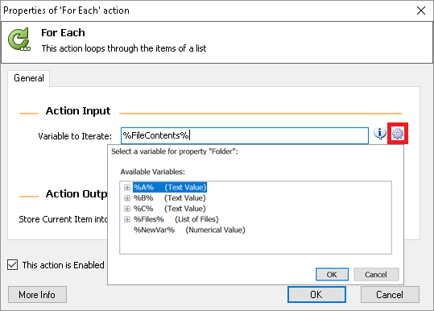

-
チュートリアル（基礎）
- RPA、RDAとは
- WinAutomationとは
- セットアップ手順
- コンソールの操作方法
- Task1 コンソールを操作してみましょう
- ProcessDesignerの操作方法
- 基本アクションについて
- Task2 アクションを設定してみましょう
- トリガー設定
- Task3 トリガーを作成してみましょう
- スケジューラー設定
- Task4 スケジューラーを作成してみましょう
- EXCEL操作
- Task5 EXCELを操作してみましょう
- マクロレコーダー
- Task6 アプリケーションを操作してみましょう
- Webレコーダー
- Task7 Webサイトを操作してみましょう
- 画像認識
- Task8 画像認識で処理を作成してみましょう
- 例外処理
- アクション一覧
- サンプル
- FAQ
- トラブルシューティング
ProcessDesignerの操作方法
ロボットの開発に必須となるツールがProcessDesignerです。
アクションの設定方法、デバッグ方法などProcessDesignerの基本操作を学びましょう。
初期設定ではデバッグ実行時にプロセスが自動保存されません。
また、1行進むのに100msの待機時間が発生するため、デバッグに時間がかかってしまいます。
メニュー > Tools > Process Designer Options > Debugger を開き、下記設定を行いましょう。
[While running process in debugger wait for]・・・「0」
[Save Process modifications automatically everytime it is run through the debugger]・・・チェック
アクションの配置
- 画面の左側にあるアクション一覧から、Display Messageアクションを探してみましょう。
検索条件に「Display」や「Message」と入力することで、絞り込むことも可能です。 - Display Messageアクションをダブルクリックするか、ワークスペースにドラッグアンドドロップしてください。
- アクションの設定画面が起動されるため、以下のように設定してみます。
- OKボタンを押し、実行を行ってください。
ウィンドウ概要
- アクション一覧
ロボットの命令文を「アクション」と呼びます。 ロボットの動きはアクションの組み合わせで制御されます。
各アクションをダブルクリックするか、ワークスペースにドラッグアンドドロップすることで、配置が出来ます。 - ワークスペース
ロボットの動きをつかさどる心臓部です。
基本的には上から順番に実行されます。 - ファンクション
同じプロセス内で共通した処理であったり、エラーが発生した際の処理をまとめるものを「ファンクション」と呼びます。（EXCELのシートのような機能）
ファンクションを上手に使うことで、見やすさ、保守性が向上します。 - 変数一覧
ロボットがデータを記憶する器を「変数」と呼びます。
WinAutomationでは「％」で囲まれた文字列を「式」として認識し、変数を使用する場合は、%ABC%などのように使用します。
変数を定義すると、WinAutomationが文字や数字など様々な型を自動で認識します。
なお変数名に日本語は使用できません。 - コントロールリポジトリ
操作対象となるアプリケーションの細かな情報が記憶されます。
アプリケーション操作において、かなり上級の設定を行う場合に使用するため、ここでは割愛します。 - イメージリポジトリ
画像認識で使用するイメージ情報が記憶されます。 - エラー一覧
デバッグ実行時のエラー内容が表示されます。 - 検索結果一覧
変数検索を行った際の結果が表示されます。
ツールバー概要
- 上書き保存
++ctrl+s++ - 戻る
++ctrl+z++ - 進む
++ctrl+y++ - 変数名変更
選択した変数名を変更します。
こちらを使用せずに直接変更した場合は、変更した名称が反映されずエラーとなります。 - アクション切り取り
++ctrl+x++ - アクションコピー
++ctrl+c++ - アクション貼り付け
++ctrl+v++ - 変数検索
変数名で検索を行います。 - Region
ワークスペースに設定したアクションのブロックで囲みます。 - コメント
コメント行を挿入します。 - Macro Recorder
マクロレコーダー機能を起動します。 - Web Recorder
Webレコーダー機能を起動します。 - 実行
プロセスを実行します。 - 1行ずつ実行
動作確認のために1行ずつプロセスを実行します。 - 一時停止
プロセスを一時停止します。 - 停止
プロセスを終了します。
ワークスペース
ブレークポイント
数字の横をクリックすると赤い丸が表示されます。
これをブレークポイントと呼び、実行時に処理を一時停止させることが可能です。
ブレークポイントを外す際は、赤丸をクリックします。アクションの無効化
アクションをDisableに設定することで、そのアクションは実行されなくなります。
変更前のコードを残しておいたり、テスト・本番用などの切り替えを行うのに有効です。
また図のようにコメントを設定しておくと非常に見やすくなります。変数の設定

各アクションを設定する画面に歯車マークが表示されている項目があります。
これをクリックすると、定義された変数一覧を使用することができ、入力の短縮につながります。
操作動画
アクション配置とファンクション
ブレークポイントを設定しデバッグ